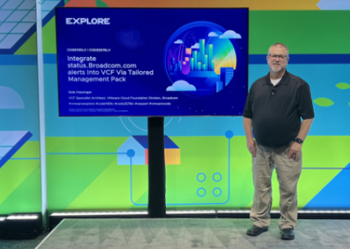
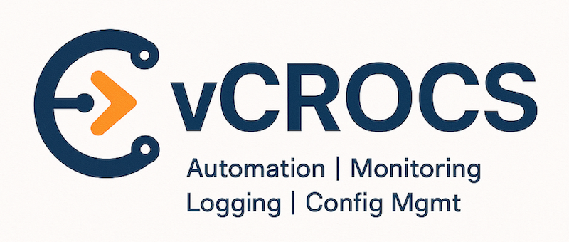

About


This blog reflects my personal views and opinions, not those of my employer. I write about topics and products that interest me, sharing tips, processes, and code to help readers begin their journey with VCF, VCF Automation, VCF Operations, and Automation Scripts.
My Information:
- Broadcom | Principle VCF Architect
- VMware vExpert | 2020 - Present
- vExpert Sub-Programs:
- VMware vExpert VCF | 2025 - Present
- VMware vExpert Cloud Management 2021 - 2024 - (Subprogram discontinued)
- VMware vExpert vSphere 2024 - (Subprogram discontinued)
- VMware {code} Coach | 2025 - Present
- If you can script it, You can Automate it!
- If you can script it, You can Prompt it with MCP!
"9 - 5 pays the bills, 5 - 10 advances your career"
My personal focus is helping the vCommunity with VCF, VCF Automation, VCF Operations and PowerCLI (PowerShell).
- There’s no better feeling at the end of the day than when someone reaches out to thank you for sharing a blog you took the time to create. Knowing that your work has helped others is incredibly rewarding.
- I created an IaC (Infrastructure as Code) environment.
- I used VCF Automation and Operations (VMware vRealize Automation, vRealize Operations and SaltStack Config)
- I used VCF Automation to complete server builds, software installs, schedule VM snapshots, Microsoft 365 automation, Citrix management, automate data center flips, server decommissions, and many other Day 2 processes…
- For observability, I used VCF Operations for the “Single Pane of Glass” experience.
- I also used VCF Operations for Logs
- I used LCM (Life Cycle Manager) for installing the VCF Automation and Operations Products.
- The code I create to complete automation is mostly done with PowerShell, because to automate VMware products, VMware has a PowerShell module named PowerCLI. There hasn't been anything that I wanted to automate that I haven't been able to do with PowerShell.
When I was a VMware customer:
"Your thought process is the most powerful automation tool you’ll ever have!" - Cody De Arkland
- I have learned a lot from the vCommunity, Powershell and PowerCLI web sites. I want to use this Blog Site as a way for me to give back. If one person finds anything I post helpful, I will consider my efforts successful.
- The code that I have shared on this Blog Site is code that I use with VCF Automation Templates/Catalog Items and everyday VMware Admin functions. Everyday I learn something new. If I think it should be shared I will write a blog about it. Check back often to see what I am doing next.
“It doesn’t make sense to hire smart people and then tell them what to do, We hire smart people so they can tell us what to do.” - Steve Jobs
Professional Journey & Acknowledgements
Currently, I serve as a Principle VMware VCF Architect focused on Strategic Accounts. My career has been shaped by the incredible people I’ve worked with and the teams that have pushed the boundaries of what is possible in our industry.
The Specialist Architect Foundation
I am proud to have been a member of the VCF Automation and Operations Specialist Architects team. This group is widely renowned for its innovation and deep expertise, and many of my colleagues there have become significant role models in my professional life.
The VMware Community & Support
I’ve had the privilege of working with an extraordinary group of people at VMware, past and present. I want to extend my sincere gratitude for the support and partnership of:
- Steve Leiberson, Brock Peterson, Franky Barragan, Cosmin Trif, Christopher Kusek, Marshall Cline, Marjorie Abdelkrime, Ariel Sanchez, Karl Hauck, Marcus Roberts, Ken Jordan, Corey Blaz, Wes Milliron, Iwan 'e1' Rahabok, the HOL Team, and many others.
Special Thanks & Mentorship
- To my first managers at VMware, Alex Musicante and Eric Murray: Thank you for believing in my passion and skills. Alex, you provided the opportunity that launched this chapter of my career; Eric, your mentorship helped me refine my technical knowledge into the SE role. 👍🏻
- To David Kruse: For being the catalyst that got me started with VCF Automation (vRA).
- To Vincent Riccio: For the opportunity to co-present SaltStack Config at VMworld 21 and SaltConf 21.
- To my peers and mentors: Robert Mitchell, Dan Grove, Steve Holmes, Steve Pittenger, Anton Wesztergom (for opening my eyes to vRA Day 2), Megan Koss, and Josh Demcher. I have learned so much from each of you.
- To David Cornelius: For giving me my first job in IT and serving as an early role model in my career. ✅
The Hackathon Teams
Some of my favorite memories come from the VMware Explore Hackathons. Thank you to the teams who shared the late nights and the podium with me:
- 2025 Team: Don Horrox, Amos Clerizier, Cosmin Trif, and Admin Willie. 🥇
- 2024 Team: Don Horrox, Amos Clerizier, Brian Haskell, and Adrian Ayran. 🥈
- 2023 Team: Madison Welsch, Wes Milliron, Tina Krogull, Viviana Miranda, and Edgar Sanchez. 🥈
Current Team & Culture
To my current team at VMware by Broadcom: Thank you for keeping the unique VMware culture alive. We continue to prioritize mutual success and, above all, doing what is best for our customers.
Inspiration & Guidance
The following community leaders have taught me the true value of "Giving Back" through their technical content. I highly recommend following their work:
- Cody De Arkland, Luc Dekens, Kyle Ruddy, William Lam, and Alan Renouf.
And finally, a thank you to anyone else who has been a part of this incredible journey called my career...
"Dale Hassinger, you push the dashboards beyond what I thought was possible." - Iwan 'e1' Rahabok
##### Products I use and Blog About
- VMware Cloud Foundation (VCF)
- VCF Automation | VCF Operations
- VMware Aria Automation | VMware Aria Automation Config
- VMware Aria Operations | VMware Aria Operations for Logs
- VMware vCenter | VMware vSphere
- vRealize Automation | vRealize SaltStack Config | vRealize Operations | vRealize Log Insight
- PowerShell | PowerCLI | Python
- AI | ChatGPT | ollama
- Windows Servers | Linux Servers | macOS
- Salt | Ansible
- SQL Server
- more...
"If you have an apple and I have an apple and we exchange these apples, then you and I will still each have one apple. But if you have an idea and I have an idea and we exchange these ideas, then each of us will have two ideas." — George Bernard Shaw
Community Contributions & Recognition
🏆 Industry Recognition
- VMware vExpert | 2020 – Present | Directory Profile
- Specializations: VCF (2025–Present), Cloud Management (2021–24), vSphere (2024)
- VMware {code} Coach | 2025 – Present
- Hackathon Leadership:
- 🥇 1st Place: VMware Explore 2025 (Team Captain – PowerShell MCP Server for Claude/VCF)
- 🥈 2nd Place: VMware Explore 2024 (Team Captain – Ollama & RVTools Integration)
- 🥈 2nd Place: VMware Explore 2023 (Team Captain – ChatGPT & Aria Automation)
🎙️ Featured Speaking
| Date | Event | Session Title |
|---|---|---|
| Apr 2026 | VMUG Connect Minneapolis | The Path to Influence: From Attendee to vExpert & Speaker |
| Feb 2026 | Central PA VMUG | VCF 9: What’s New and Technical Overview |
| Jan 2026 | Broadcom TAM Webinar | VCF Operations Management Packs |
| 2024 | Tech Bytes | ServiceNow CMDB Integration with Aria Operations |
| 2021 | SaltConf | Managing Windows with SaltStack Config |
🚀 VMware Explore / World Sessions
2025 | Las Vegas
- Presenter: Enhancing VCF Operation Management Packs with PowerShell
[CODEQT1121LV] - Main Presenter: VCF 9.0 Ops: Platform Security and Compliance
[ELW-HOL-2601-15] - Main Presenter: VCF 9.0 Ops: Cost Optimization & Chargeback
[ELW-HOL-2601-19] - Co-Presenter (HOLs): Network/Storage Ops
[2601-09], Health & Diagnostics[2601-11], Monitoring Apps[2601-13], Capacity Planning[2601-18] - Session: Streamlining Healthcare with Automation
[INDB1917LV] - Session: {code} Lab: Advanced Lab Using ChatGPT for PowerShell
[CODE2554LV] - Session: Broadcom Status Alerts Integration via Management Packs
[CODE1161LV] - Session: Maximizing Workstation/Fusion for Business and Home Labs
[CODE1162LV] - Session: Transform VCF Automation Inputs to ABX & Orchestrator
[CODE1164LV]
2024 | Las Vegas
🎧 Podcasts & Media Appearances
- Virtually Speaking Podcast: Discussing the VMware Explore Hackathon Watch on YouTube
- VMware CMTY Podcast:
- Ep. 738: Wrapping Up VMware Explore 2025 & vCommunity Activities Listen
- Ep. 659: Aria Operations | Automation Central Listen
- Two and a Half Geeks (with Doug Finke): Exploring the intersection of AI and IT automation.
📍 Local Community & User Groups
- VMUG: Frequent presenter at Philly VMUG (Aria Automation) and Central PA VMUG (VCF Ops, Explore Recaps).
- VMware PowerBlock:
- Customer Showcase: VM Right Sizing (2021)
- vRealize Operations: Your Monitoring "Single Pane of Glass" (2020)
- vBrownbag: VMworld 2020 – vRealize Operations Deep Dive
"Your stuff is consistently one of the most practical, well-presented, thoughtful, useful content sources" - Corey Blaz
- I like to wear Crocs and I like VMware Products. So what better name than www.vCROCS.info for my Blog